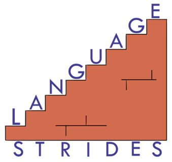

Speech Sound Evaluation
Speech, Language & Literacy Evaluation
- Speech sounds and intelligibility
- Spoken language and comprehension
- Reading
- Spelling
- Foundational skills supporting literacy
LANGUAGE S T R I D E S llc

Building speech and language skills to support a lifetime of learning.
Speech, Language, and Literacy Therapy

Specializing in language‐based learning needs.
Services
Schedule a free 15 minute phone consultation today.
Speech Sound Evaluation
Speech, Language & Literacy Evaluation
Language, including vocabulary, grammar, and inferencing, summarizing, and organizing information
R-distortions and other speech variations
Reading and writing difficulties including
For new clients If a person has already completed an evaluation with another provider, we can assist you with examining your options.
For existing clients The last few minutes of each session are reserved to discuss progress. Occasionally a parent may request a separate appointment to discuss their needs in greater depth.
Contact Language Strides to tailor a workshop to meet the needs of your school or parents group.
Past workshops have included:
Meltdowns, shutdowns, and overwhelm?
For many of my clients, getting through the rituals of daily living is extremely challenging.
Getting ready for school, getting out the door, getting settled after school, getting ready for bed, getting the seatbelt on ‐ All of these routines can be made easier with some executive function support. Customized visual supports can make this better for the whole family.
Help for the Reluctant Reader
Meet me at the library for a voyage to other worlds! Your child will explore their interests and get some library savvy. They'll go home with a stack of just‐right level books. It's a chance to expand their taste for books of all kinds.
Proudly serving ages 5 and up in Herndon, VA
Meet Andrea

Andrea Pollack founded LANGUAGE S T R I D E S in 2020 to bring excellence to the care of children with language-based learning disabilities. As a Speech-Language Pathologist she has a wealth of experience, both personal and professional, that helps her break down barriers so that their school and family lives can be more productive and enjoyable
For Andrea, diagnosing and treating disorders of speech, language, and literacy is about dignity. She often reminds parents, "I'm in it to change lives."
A certified member of the American Speech-Language Hearing Association for over 25 years, Andrea is an ASHA Mentor, an ASHA Advocate, and has earned the ASHA Award for Continuing Education many times over.

FAQ's About Dyslexia
Dyslexia can be identified just as soon as a child begins to struggle with reading or pre-literacy skills, such as learning the ABC's and counting syllables. A family history of dyslexia and difficulties in spoken language can help identify a vulnerable preschooler. The sooner a child's learning needs are identified, the sooner effective intervention can begin so they can start experiencing reading success.
A Speech-Language Pathologist or Neuropsychologist who has completed extensive professional development in both dyslexia and psychometric testing can diagnose dyslexia.
In an evaluation, the SLP will focus on speech and language skills, both spoken and written, while the neuropsychologist will typically conduct a longer evaluation that includes other academic, emotional, and cognitive domains.
NIH research indicates that 15-20% of people in the U.S. have a language-based learning disability. Dyslexia is the most common learning disability. In a class of 25 students, that's 3-5 children. Only about 1 out of every 10 of them will qualify for an IEP to get the services they need to learn to read and write effectively.
For students with dyslexia, 1-on-1 Structured Literacy Therapy is often needed in order to meet the learner exactly where they are and to respond moment-to-moment to their working memory, attention, movement, and fatigue-related needs.
Structured Literacy Therapy is systematic and cumulative. Each new lesson builds on the ones taught before it. It is explicit, which means we assume responsibility for teaching every single element of our written language rather than leaving them to figure it out on their own. We use diagnostic teaching. At all times during instruction, we are assessing learning, moving on only when we reach automaticity. This frees the student's cognitive resources for comprehension.
Treatment frequency is very individualized. Most children with speech sound disorders can accomplish their goals by doing therapy for 30 to 60 minutes per week.
The International Dyslexia Association advocates for an intensive schedule of four to five one-hour sessions per week, which, ideally would take place during the school day. For our after-schoolers, we know that is a very difficult commitment. Language Strides certainly supports prioritizing literacy, but not at the expense of play! The just-right amount of structured literacy therapy may be different for each family, and could change over time.
A curriculum of grades 1-3 reading instruction, which is usually enough to launch a child into independent language learning, can usually be delivered in less than a year of 3x/week 60‐minute visits. At 2x/week, it will take a little bit longer, but many families find that a bit more manageable for their schedules. 1x/week is better for students who have already developed the foundational skills and who are continuing to review some challenging elements or need support with language-based work that they bring home from school.
Naturally, all children are unique, and their response to our intervention will vary. We aim to move just as quickly as we can through their learning, and also just as slowly as we must.
FAQ's About Language Strides
Language Strides LLC does not participate or interface with 3rd party payers. We provide a "superbill", at the end of each month, which includes all of the information your insurance requires to determine eligibility for reimbursement in accordance with the terms of your insurance plan.
Evaluations are completed in our Herndon office. Therapy can be conducted in office or remotely via tele-health after school and on Saturdays. We also have relationships with select private schools and can provide therapy during the students' school day.
To learn more about Language Strides LLC services, please give us a call.
(571) 572-2818
Or send an email to inquiry@language-strides.com